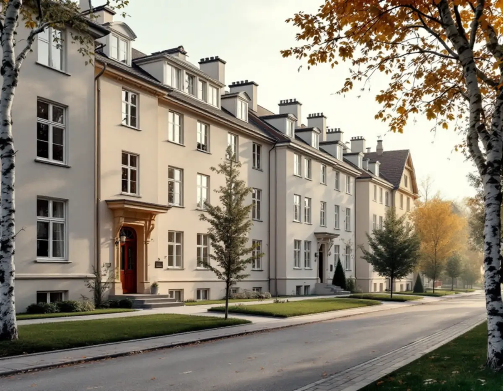
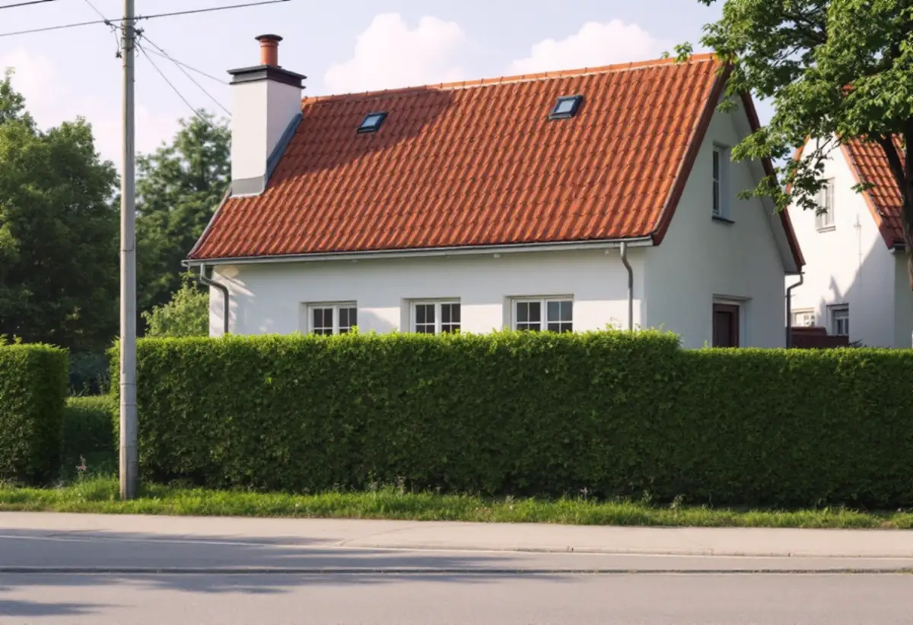

Solnakartan
Detaljplan och kulturhistoriskt värdefulla byggnader kontrolleras.
Solna stad räknar nya fönster som en fasadändring, och i Råsundas stenstad och villastad kan det betyda bygglov, kontrollansvarig och ett utlåtande om kulturvärden. Geal Entreprenad AB byter fönster åt föreningar och villaägare i Solna och tar fram handlingarna som ansökan kräver.

Solna stad skriver att bygglov krävs i varje fall när fasadändringen görs på en byggnad som är särskilt värdefull eller ligger inom ett särskilt värdefullt område, och när detaljplanen anger att åtgärden kräver lov. Stora delar av Solna har detaljplan, och den kan också reglera hur byggnaderna ska se ut.
Utan sådana skydd behövs inget bygglov för en fasadändring på ett en- eller tvåbostadshus, och inte heller när fasaden inte vetter mot allmän plats. För ett flerbostadshus där fönstren sitter mot gatan behöver föreningen därför räkna med en ansökan. Påverkar bytet konstruktion, brandskydd eller tekniska installationer krävs dessutom en anmälan.

Till en ansökan om fasadändring vill Solna ha situationsplan baserad på Solnakartan, fasadritning, planritning med åtgärden markerad, material- och kulörbeskrivning och förslag till kontrollplan. Staden anger att en kontrollansvarig kan behövas när ändringen även omfattar till exempel utbyte av fönster eller balkongfronter.
Ibland behövs också en antikvarisk förundersökning eller ett utlåtande från en sakkunnig i kulturvärden, och fotografier där även grannfastigheterna syns. Staden påminner om att du som beställare ansvarar även om en leverantör utför arbetet. Vi tar fram ritningar och foton och samordnar med kontrollansvarig när en sådan krävs.
Solna stad listar ett antal sammanhängande kulturhistoriskt värdefulla miljöer där helhetsintrycket är det viktiga, bland dem Stenstaden i Råsunda, Råsunda villastad, villabebyggelsen i norra Råsunda och 1950-talsbebyggelsen i Råsunda, Skytteholm och Huvudsta. Även Hagalundshusen, de så kallade Blåkulla, och Bergshamra by finns med.
Staden skriver att det i vissa fall är någon enstaka detalj på en byggnad som bedöms värdefull, i andra fall hela byggnaden. Kulturhistoriskt värdefulla byggnader och områden finns i Solnakartan, och där börjar vi innan vi föreslår hur de nya fönstren ska se ut.
Solna stad påpekar att du behöver fastighetsägarens medgivande för byggåtgärder. Bor du i bostadsrätt är det föreningen, och bostadsrättslagen kräver styrelsens tillstånd för en väsentlig förändring av lägenheten. Ofta byter föreningen fönstren i hela huset i samma projekt.
Ställ krav på att leverantören bygger enligt bygglovet, följer kontrollplanen och dokumenterar arbetet, råder staden, och glöm inte att begära slutbesked. Om renovering av befintliga bågar kan du läsa under fönsterrenovering i Solna, och om tjänsten i stort under fönsterbyte.
När bygglovet är beviljat kungörs beslutet, och grannar och andra berörda har fyra veckor på sig att överklaga. Därefter vinner beslutet laga kraft. Arbetet måste påbörjas inom två år och avslutas inom fem år från den dagen, annars slutar lovet att gälla, och den som börjar utan startbesked kan få betala en byggsanktionsavgift.
Kräver ändringen en kontrollansvarig håller byggnadsnämnden oftast ett tekniskt samråd, och mot slutet ett slutsamråd där kontrollansvarig redovisar hur kontrollplanen har följts. Solna påminner om att slutbeskedet krävs för att få använda det som byggts. Vi lämnar vår del av dokumentationen när fönstren är på plats.
Detaljplan och kulturhistoriskt värdefulla byggnader kontrolleras.
Fönster, fasader och grannhus fotograferas och mäts upp.
Fönster, montage och efterarbete står var för sig.
Ritningar, kulörer, foton och kontrollplan; KA och kulturvärden vid behov.
Fönstren byts enligt lovet och kontrollplanen.
Dokumentationen lämnas så att slutbesked kan begäras.
För en villa eller ett radhus som du äger ger det rotavdrag att reparera eller byta ut fönster, enligt Skatteverket. I en bostadsrätt ges inget avdrag för att byta fönster, bara för vissa arbeten på insidan av befintliga fönster, som glaset i den inre bågen.
Avdraget är högst 30 procent av arbetskostnaden. Rot- och rutavdraget är sammanlagt högst 75 000 kronor per person och år, varav högst 50 000 kronor rotavdrag.
Antal fönster och fasader, profiler och spröjs, glas och beslag, ställning, om kontrollansvarig eller kulturvärdesutlåtande behövs och hur mycket efterarbete som krävs. Efter ett gratis platsbesök får du ett skriftligt kostnadsförslag.
Byta eller renovera fönster.
Fönsterbyte i Stockholm →Takbyte, takbesiktning och plåtarbeten.
Takläggare i Solna →Råsunda, Stocksundstorp och Råsta.
Takrenovering i Solna →Ritningar, kontrollplan och slutbesked.
Byggföretag i Solna →Radhusen, föreningen och lovet.
Fasadmålning i Solna →Putsade villor och krav på material.
Fasadrenovering i Solna →Bostadsrätt, stambyte och villor.
Badrumsrenovering i Solna →Fönster från 1950-talet, kitt och fogar.
Fönsterrenovering i Solna →Bostadsrätter i Råsunda, Hagalund och Huvudsta.
Golvläggare i Solna →Ta fram och slipa trägolvet under mattan.
Golvslipning i Solna →Bostadsrätter, fläktar och Råsundas villor.
Köksrenovering i Solna →Villor, radhus och lägenheter i Solna.
Målare i Solna →Plåt i Solnas kulturmiljöer.
Plåtslagare i Solna →Väggar, dörrar, balkong och radhus.
Snickare i Solna →Gatusidan, gårdssidan och konstruktionen.
Takbyte i Solna →Tapet efter husets ålder och underlag.
Tapetsering i Solna →Kulturmiljöerna och lovet.
Tillbyggnad i Solna →Hela lägenheten, elen inräknad.
Totalrenovering i Solna →